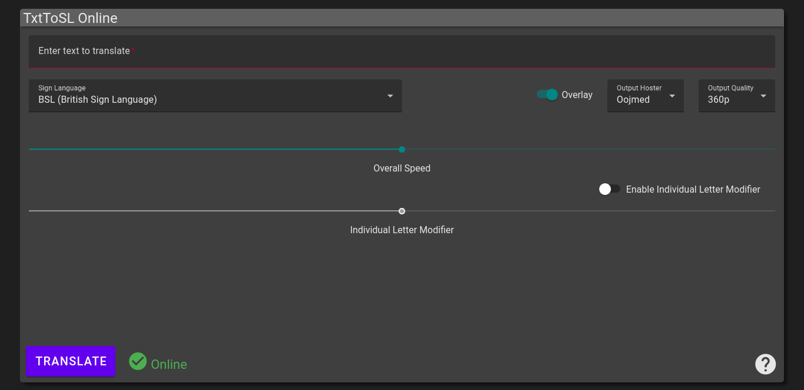
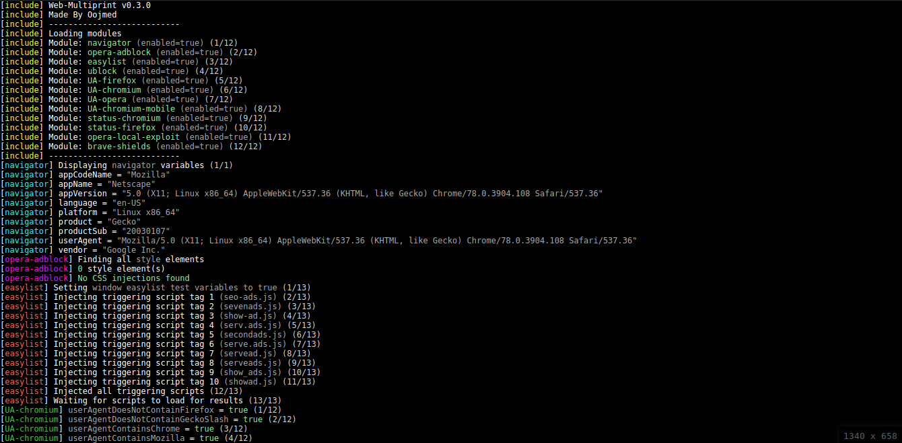
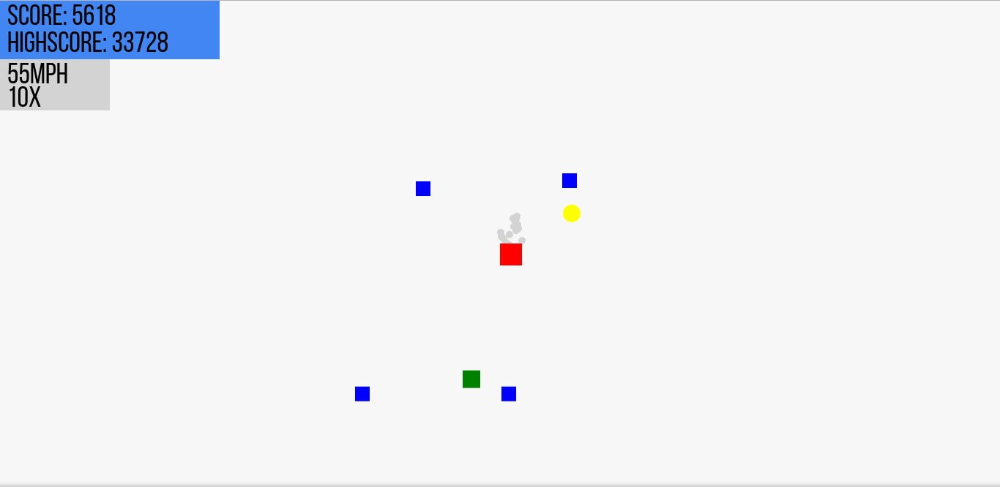
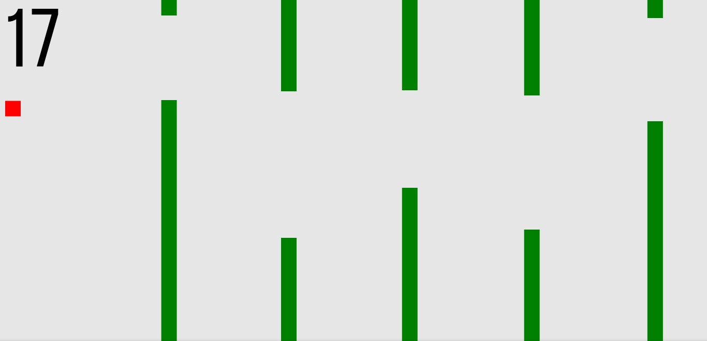

TxtToSL Web
The web app for TxtToSL Online. Uses the TxtToSL API, which translates text into sign languages.

Web Multiprint
A web fingerprinter. It can identify browser and adblocker via existing and our own new techniques.

Ski
A HTML5 Browser game made with HTML5 Canvas and JS. Inspired by SkiFree, by Chris Pirih in 1991. Made from scratch using our own engine.

Floppy Birb
A HTML5 Browser game made with HTML5 Canvas and JS. A clone of Flappy Bird. Made from scratch using our own engine.